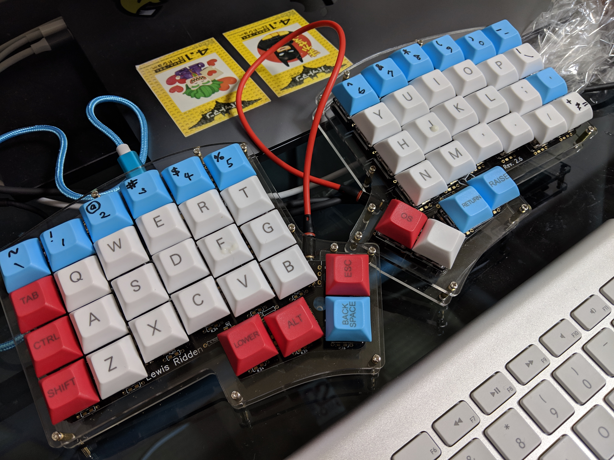
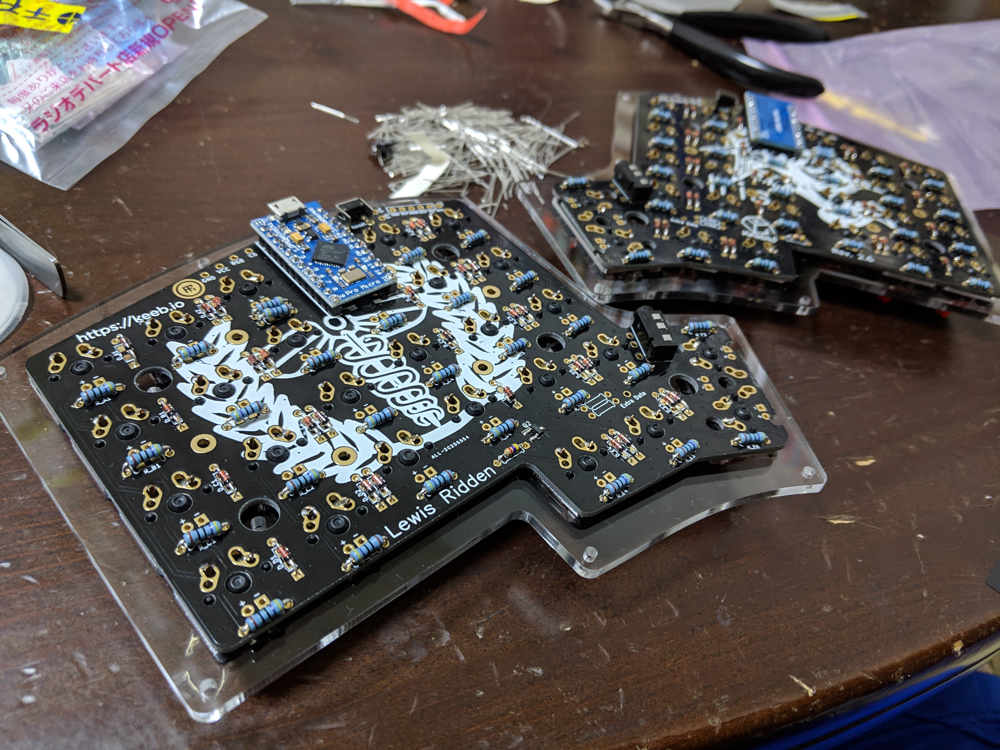

Iris build log¶
Build firmware:
$ git clone git://github.com/qmk/qmk_firmware.git
$ cd qmk_firmware
$ make submodule
$ make iris/rev2:avrdude
avr-gcc 8.2.0 has a bug: https://github.com/qmk/qmk_firmware/issues/3657
The workaround is build the firmware in some container such as Docker, and write the firmware by yourself, not using make command:
$ ls /dev/tty.usbmodem*
tty.usbmodem1432301
$ avrdude -p atmega32u4 -c avr109 -P /dev/tty.usbmodem1432301 -U flash:w:iris_rev2_default.hex
Make sure you have iris_rev2_default.hex in the current
directory. Maybe you might have to reset the Pro Micro by
shorting the RST and GND.
Built without LED¶
All below was made with this Pro Micro which seem very stable. Also I bought cherry mx compatible switch , red and clear.
https://www.instagram.com/p/Bq5P7nDANwt/
https://www.instagram.com/p/BrDYypKAexl/
- Keycaps : https://www.aliexpress.com/item/DSA-50-dye-sub-keycaps-for-cherry-mx-switch/32879946574.html


Lighting with LED¶
Optional - LED support components
2 AO3416 MOSFETs
2 4.7kΩ resistors
Optional - LEDs and 470Ω resistors
But they’re not included in the kit so I seeked for them in Akihabara, in 2018/12/28 . And found:
- 100PCS 1/4w 470Ω resistors 金属被覆 @ 300JPY x2
- 10PCS Nch MOSFET IRFML8244TRPBFTR @ 160JPY
- 10PCS Nch MOSFET IRLML6344TRPBFTR @ 240JPY
- 10PCS 角形2.3.4 赤色LED 輝度:1000～1500mcd 指向角:120° 波長:625～630nm 順電圧:1.9～2.3V 順電流:30mA @ 500JPY
- 10PCS 角形2.3.4 白色LED 輝度:1000～1500mcd 指向角:120° 波長:590～595nm 順電圧:1.9～2.3V 順電圧:30mA @ 500JPY
- 10PCS 角形2.3.4 青色LED 輝度:1000～1500mcd 指向角:120° 波長:590～595nm 順電圧:1.9～2.3V 順電圧:30mA @ 500JPY
- 10PCS 角形2.3.4 緑色LED 輝度:1000～1500mcd 指向角:120° 波長:590～595nm 順電圧:1.9～2.3V 順電圧:30mA @ 500JPY
First Combination I tried was:
- 1/4w 470Ω resistors 金属被覆
- Nch MOSFET IRFML8244TRPBFTR
- 角形2.3.4 緑色LED
The LED lighted but not that bright and hard to recognize even in darkness. So I doubted the MOSFET as it’s different from required one, and changed to Nch MOSFET IRLML6344TRPBFTR - but didn’t worked well thought the key typing itself worked very fine.
On 2018/12/30 I tried buying another LED
順電圧:3.0～3.4V
順電流:20mA
1500～2500mcd
指向角:120°
波長:515～521nm
But it didn’t worked. The reason was that there wasn’t enough current provided to LED. The old Iris build guide says:
470Ω resistors are commonly used, but this value might vary, based
on the LEDs you use and the amount of current they draw.
Here’s what I unsuccessfully built, a black one ….

For LEDs to glow, Iris rev2.5 ビルドメモ uses 4.7Ω ( RK73H2ATTD471F ) for LED resistors…
But how much? What to buy??? This comment gives a clear description:
USB 2 spec devices are supposed to keep their power draw under 500mA
per port, or roughly 2.5W. Your power budget should also include
running 2 pro-micros, and possibly RGB underglow. But let's say we
budget 50mA per each half of the Iris.
That's a maximum of 56 keys, or 28 per half, so 28 LEDs for the left
and right sides.
Using this website http://ledcalc.com/
We can input
1. input voltage of 5v (USB)
2. voltage drop across LEDs - the forward voltage value For some green LEDs I bought from mehkee this value is 3-3.2v. So say 3.1v
3. 28 LEDs.
Now playing with the desired LED current, the nearest value is 1.9mA
per LED. This calculates 1.2KOhm resistor, so you would need 28
1.2KOhm resistors. This would consume 44mA per Iris half or 88mA for
both sides.
The next nearest resistor value takes us to 54mA with a 1KOhm
resistor which would use 108mA which is slightly above our power
budget, but you may be able to get away with it.
In summary, for a given 1.8mm or 2x3x4mm LED you need the forward
voltage to calculate it's power consumption.
So I should have soldered right combination of resistors and LEDs. LEDs require enough amount of current, equally power to glow, with enough voltage. Those values are described as each spec.. if the registors are too large enough current won’t be provided, but if it’s too small, then too much current may break the system (possibly?).
A comment for another article gives a link to resistor value calculator. According to the calculator my configuration with 2x3x4 shows the registor value is only 100 Ohms. But I bought 470 Ohms, which provides < 7mA current to LEDs. The comment also describes the sense of scale:
You will need resistors and the value will depend on what LED's you
get. 470 Ohm is a safe bet but can vary depending on the type of LED
you get. There is a formula to figure it out. I ended up using 330's
on mine and the Yellow LED's are just bright enough. 470 was too dim
Next time I’ll get another bunch of resistors, say, like 4.7Ω or 47Ω.